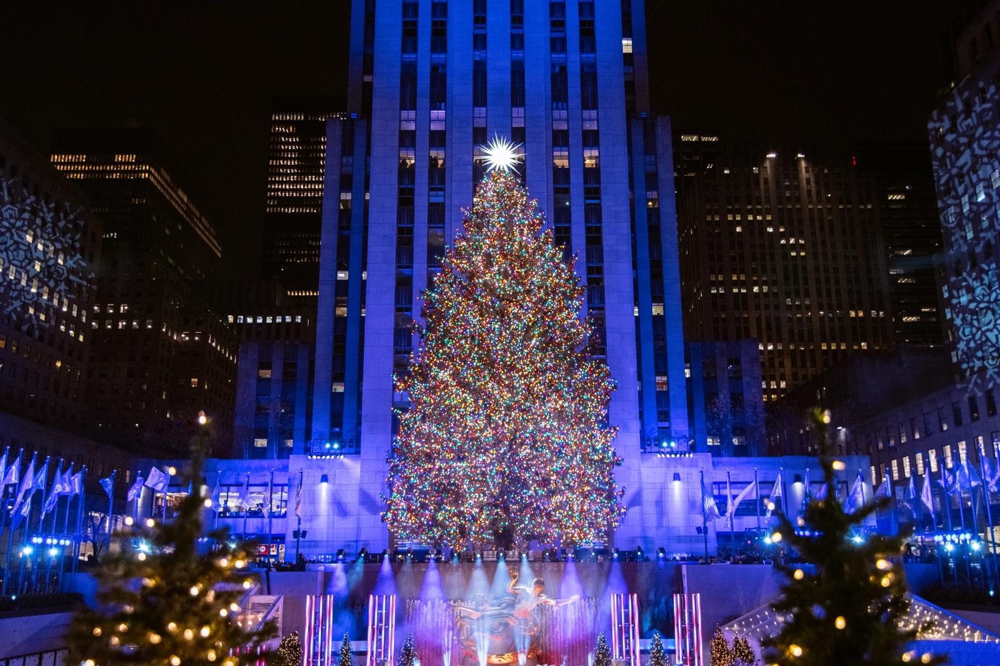

Travel
Yellowstone National Park


Geographical Location: North America
Yellowstone National Park, established in 1872 in the U.S., is known as the world’s first national park. It's revered for its geothermal features, including over half of the world's geysers, and its diverse wildlife such as grizzly bears, wolves, and herds of bison and elk.
The park's massive 2.2 million acre size includes picturesque landscapes of mountains, lakes, canyons, and rivers. Yellowstone also houses the Yellowstone Caldera, one of the earth's largest active volcanic systems, contributing to its unique geological attractions.
Photo Gallery

Mammoth Hot Springs has a number of actively forming Travertine terraces.

The drive to Lamar Valley requires some dangerous roads. But the result is amazing sunset views.
The multicolored layers get their hues from different species of bacteria living in the cooler water around the spring.
The buffalo were so common along the roads in Yellowstone that our mantra became "If it ain't lickin the car, we aren't stopping."

If you can handle the odor, the Yellowstone Sulphur Springs is a great place to hike.
Lake Tahoe


Geographical Location: North America
“When it comes to things to do in South Lake Tahoe, you can shred down the mountain from 10,067 ft. at Heavenly Mountain Resort’s peak or you can dive into the depths of Lake Tahoe. It’s more than 1600 ft. deep, making it one of the deepest lakes in North America. Needless to say, there’s plenty of things to do in Lake Tahoe above and below the surface.”
“All parts of Lake Tahoe are beautiful and have something unique to offer. South Lake Tahoe is popular for its ski resorts like Heavenly, Sierra at Tahoe and Kirkwood ski resorts. South Lake Tahoe is also popular for its restaurants, shopping, casino resorts and vibrant nightlife.”
Photo Gallery

Stateline Lake Tahoe

Tahoe beach retreat

Best thing to do in Lake Tahoe before summer ends

Firepit at Zephyr Cove RV Park

Hikers watching sunset
Seoul

Geographical Location: Asia
Seoul, South Korea's capital, is a vibrant mix of modern skyscrapers and historic sites like Gyeongbokgung Palace. Its streets offer a feast of culinary options, from traditional Korean dishes to contemporary cafes.
The city is rich in culture and history, with ancient temples standing alongside bustling shopping districts. The Han River adds a natural element to the urban landscape, making Seoul a unique blend of tradition and modernity.
Photo Gallery

Originally constructed in 1395, Gyeongbokgung Palace is widely regarded as the premier tourist destination in Korea, offering an unparalleled deep dive into Korean traditions

Lotte World is the biggest amusement park in Seoul
Bukchon Hanok Village provides a unique blend of trendiness and traditional Korean culture
Featured in the world-renowned song, "Gangnam Style," Gangnam is one of the busiest places in Seoul, bustling with office workers during the day and party-goers at night
Cheonggyecheon is an amazing place to take a walk in, especially at night with its remarkable lights
New York


Geographical Location: North America
New York City, renowned for its iconic skyline and vibrant energy, hosts landmarks like Times Square and the Statue of Liberty. It's a melting pot of culture, history, and innovation, offering an array of museums, Broadway shows, and global cuisines.
The city has been my personal haven for four years of early adulthood. Without a traditional campus, Washington Square Park became the focal point of my undergraduate life, with the city's amazing food scene serving as my unofficial meal plan. Truly embodying its reputation as the city that never sleeps, it offered an unparalleled setting for my formative college years.
Photo Gallery
Located right by my house, the Highline was my go-to spot for showing around friends who came to visit
Washington Square Park was the center of my college life
Rockefeller Center is a must-see during the holiday season
Whenever family and friends visited from elsewhere, I made sure to take them to DUMBO for those quintessential "NYC" photos
I was lucky enough to celebrate my undergrad graduation with the Empire State Building lighting up in purple
Paris

Geographical Location: Europe
Paris, known affectionately as the "City of Light," is a beacon of culture and history that shines through its iconic landmarks and cobbled streets. It is a city where the past and present intermingle, with grand boulevards and neoclassical architecture standing alongside avant-garde fashion and modern gastronomy.
The heart of Paris beats in the rhythm of sidewalk cafés, where the art of leisure is perfected, and in the vibrant marketplaces where the freshest of French produce is a daily celebration. Amidst this, the Seine River flows, cutting through the city's arrondissements, whispering the stories of lovers, artists, and poets who have all been captivated by Paris's timeless charm.
Photo Gallery
Louvre Pyramid is one of the most visited museums in the world